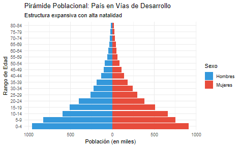
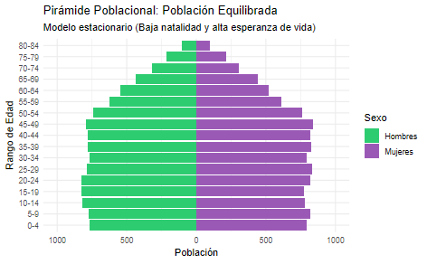
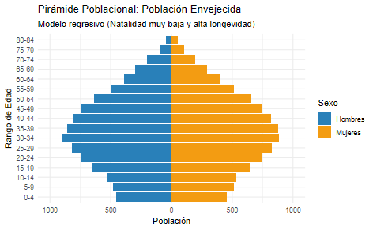
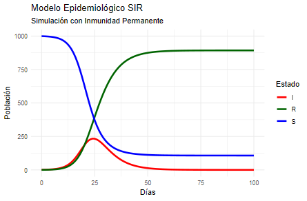
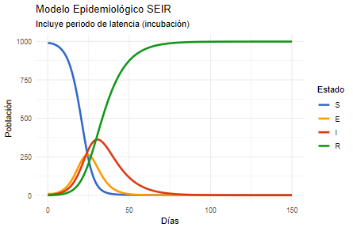
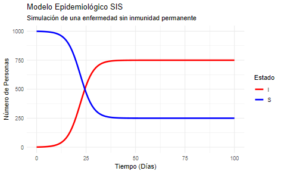

4 Monitorización en salud
La monitorización en salud se encuentra en enmarcada dentro de lo Plan de Salud 2030 de la OMS. Se trata de un concepto importante debido a que nos permite valorar la situación de una determinada comunidad y tomar, en consecuencia, decisión informadas sobre dicha población.
Acciones encaminadas a la recogida y análisis sistematizado y continuado de información sanitaria, económica, social y ambiental de una comunidad con el objetivo de tomar decisiones informadas.
La monitorización en salud se realiza a través del establecimiento de indicadores (características de un individuo, población o comunidad). Los indicadores pueden ser clasificados en función del objetivo que persigan, a saber:
- Indicadores diagnósticos: Aquellos destinados a valorar la situación de una comunidad.
- Indicadores de progreso: Aquellos destinados a valorar el impacto de una intervención sobre una comunidad en un tiempo dado.
- Indicadores evaluativos: Aquellos destinados a valorar el impacto final de una intervención sobre una comunidad.
A su vez, existen ciertos indicadores conocidos como centinela diseñados para valorar la existencia de un evento grave que actue como señal de alarma (casos de gripe en una región superiores a los esperado, fallecimientos superiores a lo esperado.)
En definitiva, los indicadores nos permiten conocer y cuantificar la situación en salud de una determinada comunidad o población.
4.1 Indicadores clásicos de la salud comunitaria
Dentro de los indicadores clásicos de la salud comunitaria encontramos aquellos relacionados con la mortalidad, la vida y la vida libre de enfermedad de la población. Podemos destacar:
Definido como la tasa (razón) de fallecimientos por cada 1000 habitantes de una población dada en el periodo de un año
Definido como la tasas (razón) de personas enfermas por una enfermedad específica o general por cada 1000 habitantes de una población dada y en un periodo de tiempo determinado (generalmente un año)
Promedio de años de vida al nacer de una población dada.
Promedio de años de vida restante para una persona dada su edad respecto a una población dada.
Promedio de años que una persona espera vivir sin limitaciones funcionales o discapacidades físicas o mentales, viviendo una vida de calidad y buena salud en una población dada
Se tratan de indicadores sencillos (generalmente escalas de 0 a 1) que unifican distintos factores de una población dada para clasificarla en estratos. Un ejemplo de ello sería el índice MEDEA que se construyó para estandarizar la privación socioeconómica de la población.
La demografía muestra la cantidad de personas por intervalos de edad. Estos gráficos demográficos permiten conocer, de forma indirecta, el grado de desarrollo de una región y predecir su situación futura. Clásicamente encontramos 3 tipo de gráficos demográficos:



Dentro de los indicadores relacionados con la medición de las enfermedades o condiciones de salud podemos destacas:
Total de casos existentes de una enfermedad o condición de salud en una población determinada y en un momento dado.
Casos nuevos de una enfermedad o condición de salud en una población determinada y en un periodo de tiempo dado.
Ambos indicadores, prevalencia e incidencia, son esenciales en la monitorización de la situación de una enfermedad o condición de salud debido a que el primero nos informa del impacto total de la enfermedad o condición de salud y el segundo nos indica la evolución de la enfermedad o condición de salud.
Finalmente, en cuanto a la previsión de una enfermedad infecciosa, a continuación se presentan los tres modelos clásicos para predecir el comportamiento de una enfermedad o condición de salud transmisible en una población:
Modelo matemático simple que clasifica los individuos de una población en 3 grupos (S: Susceptibles de contagio, I: Infectados, R: Recuperados) modelando y prediciendo como se comportará la enfermedad en una población.

Modelo matemático que extiendo el modelo SIR clasificando a los individuos de una población en 4 grupos (S: Susceptibles de contagio, E: Expuestos a la enfermedad, incubando pero sin capacidad de transmitir, I: Infectados, R: Recuperados) modelando y prediciendo como se comportará la enfermedad en una población.

Modelo matemático que presupone que una enfermedad transmisible no genera inmunidad tras el contagio y superación de la enfermedad, clasificando a los individuos de una población en 3 grupos (S: Susceptibles de contagio, I: Infectados, S: Susceptibles nuevamente) modelando y prediciendo como se comportará la enfermedad en una población.

El concepto del Ritmo Reproductivo Básico (R0) se conoce como número promedio de casos secundarios que una persona infectada genera en una población donde todos los individuos son susceptibles (sin inmunidad previa y sin intervenciones de control). Nos ofrece información del estado de propagación de una enfermedad transmisible:
- R0 < 1: La enfermedad se minimiza, existe alta probabilidad de reducción de la enfermedad.
- R0 = 1: Enfermedad endémica, persistiendo en la población pero no causando epidemia.
- R0 > 1: La enfermedad se propaga, existe algo riesgo de epidemia.
4.2 Indicadores en determinantes de la salud
En cuanto a los indicadores relacionados con los determinantes de la salud, a continuación se exponen algunos de los indicadores más comunes:
4.2.1 Indicadores socioeconómicos
Mide la cantidad de niños nacidos por 1000 habitantes en una población y tiempo dados
Mide la carga potencial de la población no productiva (niños y ancianos) sobre la población en edad de trabajar
Mide la proporción de población de 25 a 64 años con nivel de estudios de 1º Etapa de educación secundaria o inferior
Mide la proporción de población desempleada frente a la empleada en la población activa en un tiempo dado
Mide la proporción de población en el umbral de la pobreza en una población y tiempo dados
4.2.2 Indicadores de estilos de vida
Mide la cantidad de personas con hábitos tabáquicos en una población y tiempo dados
Mide la cantidad de personas con hábitos de consumo de alcohol en una población y tiempo dados
Mide la cantidad de personas con clasificación de obesidad (según IMC) en una población y tiempo dados
Mide la cantidad de personas con hábitos de sedentarismo en una población y tiempo dados
4.2.3 Indicadores medioambientales
Mide la cantidad de personas con acceso a agua de consumo en una población y tiempo dados
4.2.4 Indicadores del sistema de salud
Mide el tiempo medio de espera para una primera consulta de Atención Primaria
Mide el tiempo medio de espera para una primera consulta de Atención Especializada
Mide el gasto económico por habitante de la sanidad (tanto privada como pública) para una población y tiempo dados
Mide el gasto económico por habitante de la sanidad pública para una población y tiempo dados
4.3 Recogida de información y acceso a los indicadores de salud
La información para la monitorización de la población y la creación de los indicadores se recoge a través de observatorios, repositorio y bases de datos del sistema de salud y a través de la relación de encuestas sanitarias a la población. A continuación, se citan algunos repositorio, bases de datos y encuestas de salud más utilizadas.
4.3.1 Repositorio y acceso a bases de datos
La OMS goza una un repositorio para acceder a los indicadores de la salud: Indicadores OMS.
El sistema nacional de salud goza de un repositorio para acceder a los indicadores de la salud: Indicadores SNS
El Gobierno Vasco goza de un repositorio para acceder a los indicadores de la salud: Indicadores Gobierno Vasco
Organización sobre observatorio de la salud: https://observatoriodesalud.es/
4.3.2 Encuestas de salud
Las encuestas de salud son una serie de proyectos de recogida de datos realizadas de forma periódica sobre un conjunto de la población representativo de ésta (muestra representativa). Las encuestan recogen información variada de la población (calidad de vida percibida, ingresos totales, número de hijos…). Estos estudios se realizan a nivel internacional (europea), estatal (España) y a nivel local (País Vasco).
Encuesta Europea de Salud: https://ec.europa.eu/eurostat/cache/metadata/en/hlth_det_esms.htm
Encuesta estatal de Salud: https://www.sanidad.gob.es/estadEstudios/estadisticas/encuestaSaludEspana/home.htm
Encuesta vasca de salud: https://www.euskadi.eus/encuesta-salud/inicio/